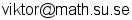

0704 222 732
Västra Finnbodavägen 3
131 71 Nacka
Currently employed at the Department of Mathematics as a Teaching Assistant.
At Ericsson Research I developed real-time web applications as a Researcher within the Multi-Media Technologies group, full time during the summer 2013.
Previous semesters I have worked as a Private Teacher for upper secondary school (gymnasium) students and as a Substitute Teacher at various upper secondary schools.
I enjoy writing code, most of my recent projects tend to fall under the category of real-time web apps. See more below.
Studying mathematics and the universe...
This semester I am taking courses in both theoretical and experimental Quantum Mechanics along with a course in Foundations of Mathematical Analysis.
I am taking part in the Bachelor's Program in Physics in parallel with the BSc Program in Mathematics. I will be writing my thesis next semester, after which I will continue my studies at graduate level.
See my Curriculum Vitae further down for a detailed list with more information.
This is a list of some of my projects and ideas for future projects, see my Github profile for more, and source code.
I like to work with Node.js and Express.js on the server with mongodb or other NoSQL databases. I often employ socket.io (websockets) for real-time communication. In many cases I use the service Firebase as real-time backend solution. On the client-side I very much enjoy using AngularJS as MV* framework.